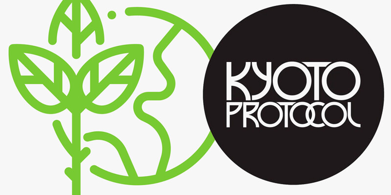
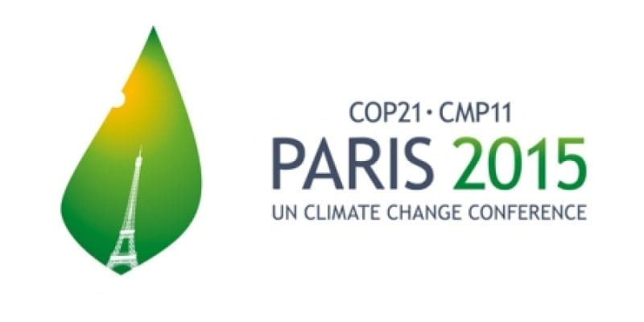

Una respuesta en construcción
El mundo ha respondido al cambio climático a través de acuerdos internacionales como el Acuerdo de París, la transición hacia energías renovables y el desarrollo de tecnologías limpias. Sin embargo, las emisiones de GEI continúan aumentando y los impactos son cada vez más evidentes.
La respuesta global avanza, pero los compromisos adquiridos aún son insuficientes para cumplir los objetivos establecidos por la ciencia.
Acuerdos y marcos internacionales

Protocolo de Kioto (1997)
Primer tratado internacional con objetivos legalmente vinculantes de reducción de emisiones para los países desarrollados. Estableció el principio de "responsabilidades comunes pero diferenciadas" entre países industrializados y en desarrollo.

Acuerdo de París (2015)
Principal tratado climático vigente. Por primera vez, todos los países firmantes se comprometieron a limitar el calentamiento global "muy por debajo de 2°C" y proseguir esfuerzos para limitarlo a 1.5°C sobre niveles preindustriales.
Organizaciones y movimientos ambientales
Greenpeace
Conocida por sus acciones directas para denunciar la inacción climática. Ha liderado campañas icónicas en favor de los océanos, contra la energía nuclear y la deforestación.
Fondo Mundial para la Naturaleza (WWF)
Centrado en la conservación de la biodiversidad. Colabora con gobiernos y empresas para ayudar a cumplir objetivos climáticos nacionales e internacionales.
PNUMA (UNEP)
Organismo de la ONU que coordina la respuesta ambiental global, apoyando a los países en la implementación de proyectos de adaptación y mitigación climática.
Fridays for Future
Iniciado por Greta Thunberg, movilizó a millones de jóvenes en huelgas escolares semanales que se convirtieron en manifestaciones globales exigiendo acción climática inmediata.
Extinction Rebellion (XR)
Movimiento de desobediencia civil no violenta que presiona a los gobiernos a actuar radicalmente. Utiliza métodos disruptivos como la paralización de espacios públicos.
Conferencias de las Partes (COP)
Eventos anuales donde se negocian y revisan los compromisos climáticos internacionales. La COP21 de París fue el punto de inflexión donde se firmó el acuerdo más ambicioso hasta la fecha.
¿Qué podemos hacer tú y yo?
Los acuerdos internacionales son necesarios, pero el cambio también empieza en las decisiones cotidianas de cada persona.
Ver qué debemos hacer